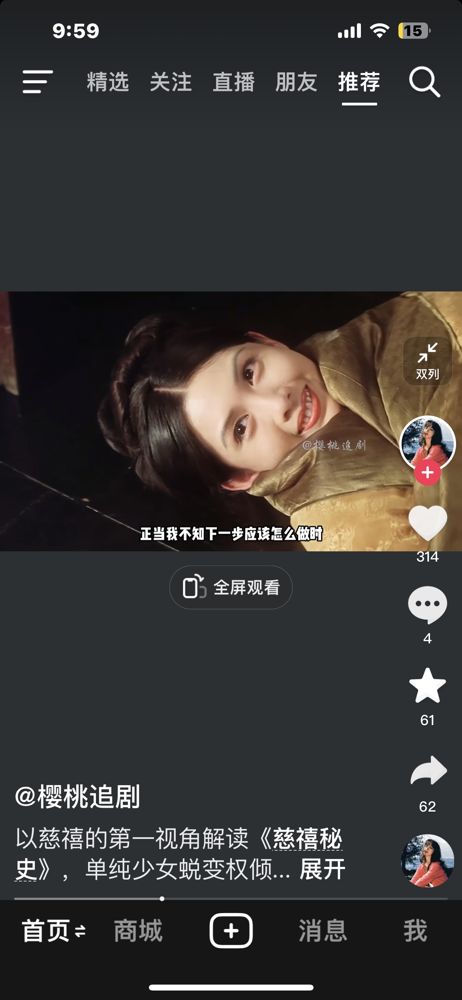
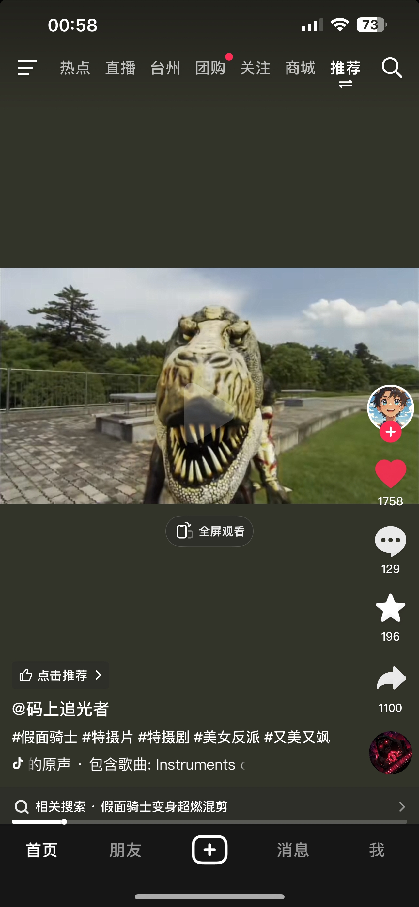
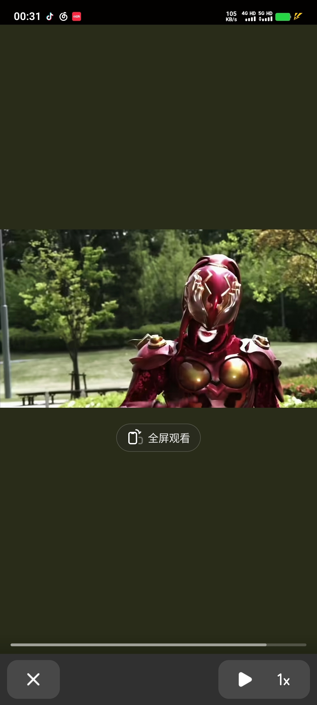

我十六岁那年算命的让我母亲把我掐死在襁褓之中
清朝不是慈禧一个人搞坏的，是从一开始里面就是烂的
还有后续吗
空前绝后的美人 
如果她没有被选进宫，六王爷娶了应该会幸福吧[暗中观察]
小时候看过这个电影。现在想想，竟然能在电视上看到这么大尺度的。
结局就是她回宫收到了宠幸后面欲望变大想要做皇帝，皇帝后来病死她和六王爷纠缠在一起掌控了局势，最后变成了垂帘听政的慈禧
我怎么感觉最近一两个月这种第一人称的解说多了起来[发呆]
这个一看就是用deepseek用慈溪第一视角解说的
就这类末日电影，个人觉得“未来水世界”是最好的[微笑]
现实的小孩一家全部被杀了，我记得
原来是这个意思啊，读没读懂，现在听懂喽
刘备曾经三次从派出所把孔明保释出来
蜀汉就该是这口音
简单明了 一下就读懂出师表了
熟悉的口音 一下子就回到贵州了
伯伯给你借东风。
分三丫出来真的憋不住哈哈哈哈哈哈哈
从来没得啷个明白过这篇文言文嘞意思[流泪]
文艺复兴了[宕机]
这音频小时候抱过我
啊？？？现在是哪年？？？
明明都很漂亮，变身起来各个跟鬼一样[捂脸]
不er，这对吗 
我觉得还好啊，怪兽就是怪兽，没有因为是漂亮的女孩子就搞成其他什么样子的[思考][思考][思考]
最好看的一个变身一闪而过很怕我看到[酷拽][酷拽][酷拽] 
我的妈这位真的好美
我不理解，为什么男骑没几个丑的，女骑我只刷到过一个好看的[皱眉]
这么困难了还是没忘记生娃[尬笑]
让他喝吧，不喝第二次世界大战就开始了
陈国豪在常规赛和季后赛都有过30+，季后赛还是打萨林杰和沈梓捷的内线拿30+9，星锐赛也是乱杀，可惜碰上历史级的名帅闵鹿蕾，能够说出我们不需要库里这种话
天呐，庄语山骑马出逃的那一幕好美[流泪]
二姐这个演员选的也好，坏不自知，但底色又有一丝善良，这个剧真的不错
真不敢想象何泓姗已经是38岁了，说她25我都信
一个庶女能嫁给世子？
如果是这个结局，我会超级满意。
所以庄仕洋抢走了叔叔的名利，让叔叔成为了书疯子，他抢走宇文大人的惜文，害死了父亲，在周如音的计划下，他也趁着此机会让惜文和女儿分离，让家人们厌恶母子俩，让二姐得到更大的权力只为自己而活，所以最后残害庄家的也只是他自己罢了[流泪][流泪][流泪]
感觉秀才[尬笑]才是剧里最坏的那个人 看着弱不禁风，看着人畜无害，看着卑躬屈膝
庄语山，目前看了10集，虽然她是一个反派角色，但真的很喜欢她。重情重义，宁愿自己受罚，也不愿意让丫鬟顶罪，骑马的时候肆意潇洒，真的很鲜明
你们发现没，小狗都特别喜欢坐车坐在窗户边，或者坐电动车，他们特别喜欢
电离辐射，引发DNA断裂
DNA不语，只是一味的断裂。
我说为啥早晨照镜子感觉自己的身材比夜晚看要更好[黑脸]
第一个 早晨身高比晚上高 我初中物理老师告诉我 人像面袋子 抖搂抖搂就矮了[憨笑]
《两赌徒在赌桌上都想着赢》
不知道为什么，我跟我对象吵架，一吵架我就想亲她[裂开]，越激烈越想亲
这一身好好看
个人觉得还是这种风格更适合她，很高级很精致
我们单姐快瘦成纸片了[泣不成声]
@安桂花 好瘦啊，我第一次这么切实的感受到上镜胖10斤，她都这么瘦了，平常上镜看着就是正常的
《古相思曲》硬控我[流泪][流泪][流泪]，太遗憾了
蒙眼是杰哥的情趣唱法
张杰一开始不怎么起眼，越来越惊艳
同志，这是歌厅，不是省厅
老师，先别管自来也了，我想问一下：兽族萨满拿闪电链做心脏除颤，急救中心该采购图腾仪还是吊销器械许可证？
翻到《火影忍者疾风转》第353集
想了半天不知道发给哪个又学医又看火影的[捂脸][捂脸]
《长门本人终于回应自己是长门这件事》
自来也当是不该交感神经兴奋[流泪]
老师我没听懂这是生理学哪一页的机制[黑脸]
老师，一袋米要扛几楼
这集我也看过 都是原版
各位大佬，我想问一个问题，为什么他们这些特别厉害的人都不杀球
玩音乐应该很快乐吧！为什么还会掉头发
别说古代，就算放到现代，刘秀也是相当炸裂的存在[捂脸]陨石能用核弹之类的打爆，但刘秀还有一招冰河时代，冰封黄河，这招怎么破[石化]
重生我还是窝囊废
Read more: